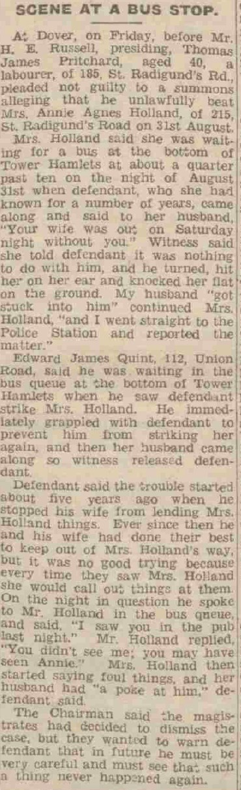
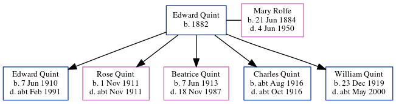

Edward James Quint 1910 - c1991
[ Home ] | [ Calendar ] | [ Surnames Index ] | [ Errors ] | [ Family History ]A general labourer and the child of Edward Quint (a harbourman) and Mary Rolfe (a domestic general servant), Edward Quint, the third cousin once-removed on the father's side of Nigel Horne, was born in Dover, Kent, England on 7 Jun 19101,2,3,4,5,6 and baptised there at St Mary the Virgin on 23 Jul 1910.
During his life, he was living at Lansdowne Cottages, Union Road in Dover on 2 Apr 19111; and at 112 Union Road in Dover on 19 Jun 19212, on 29 Sept 19393 and in 1947 (the same place as his parents had been living on 19 Jun 1921).
He died c. Feb 1991 in Dover5.
Parents
- Edward Seagar was born in 1882
- Mary Jane was born on 21 Jun 1884
Citations
- 1911 Census for England & Wales - Findmypast (was age 0 and the son of the head of the household)
- 1921 Census Of England & Wales - Findmypast (was age 11 and the son of the head of the household)
- 1939 Register - Findmypast (was the son of the head of the household)
- England & Wales births 1837-2006 - Findmypast
- England & Wales deaths 1837-2007 - Findmypast
- Kent Baptisms - Findmypast
Media
Dover Express September 12, 1947

England & Wales births 1837-2006 - BMD/B/1910/3/PZ/000094/091
Kent Baptisms - GBPRS/CANT/B/96300388
1939 Register - TNA/R39/1714/1714B/012/03
England & Wales deaths 1837-2007 - BMD/D/1991/2/78651892
1921 Census of England & Wales - GBC/1921/RG15/04547/0289/03
Family Tree
Map
Generated by ged2site. Last updated on Jul 3, 2024
Known Issues
Residence record for 1947 contains no citation